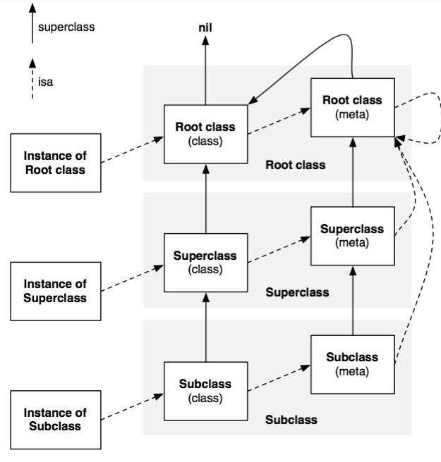

isKindOfClass和isMemberOfClass
直接看一下这两个方法的实现源码。
1 | + (BOOL)isMemberOfClass:(Class)cls { |
可以看到，对于类方法和实例方法的实现是有区别的，对于类方法，通过自己的isa指针获取类类型；对于实例方法，则是通过object_getClass获取类类型。
1 | + (Class)class { |
实际上，object_getClass方法最后也是取的类对象的isa指针，那么问题来了，实例类中isa指针指向了其类对象，那么类对象的isa指针又指向了哪里呢？
类与元类
至此，“元类”的概念终于浮出水面，我们也得以明白为什么会存在元类这一概念。
类对象的isa指针便指向了其元类，之所以引入元类这一概念，便是为了实例方法和类方法方法寻找逻辑上的统一。

正如这张经典的图片所示，实例类的isa指针指向了其类对象，而类对象的isa指针指向了其元类。所有元类的isa指针均指向了根元类NSObject，对于NSObject元类，其isa指向了自己，superclass则指向NSObject类。
在查看元类时，会发现元类的名称和类对象是相同的，但是其地址是不同的，可以通过class_isMetaClass方法进行判断。
测试
1 | @interface ObjcClass : NSObject |
对于这六个BOOL值，应该输出什么呢？
结合之前的源码，+ (BOOL)isKindOfClass:(Class)cls方法内，首先判断传入的cls是否等于其元类，否则一直寻找其superclass，查看是否相等。+ (BOOL)isMemberOfClass:(Class)cls方法内，则直接判断cls的isa指针，即元类是否和cls相等。
那么对于类对象来说，其isa指针和传入的类度对象本身永远不等，所以2、4、6的答案均为NO。
对于check1来说，首先判断[NSObject class]是否和其元类相等，答案是否，之后判断[NSObject class]是否和其元类的superclass相等，根据上述图片可以看到相等，所以check1答案是YES。
对于check3来说，首先判断[ObjcClass class]是否和其元类相等，答案是否，之后判断[ObjcClass class]是否和其元类的superclass，即NSObject元类相等，答案为否，最后判断[ObjcClass class]是否和[NSObject class]相等，答案是否，所以check3的答案是NO。
对于check5来说，首先判断[NSObject class]是否和ObjcClass元类相等，答案是否，之后判断[NSObject class]是否和NSObject元类相等，答案是否，最后判断[NSObject class]是否和[NSObject class]相等，答案为是，所以check5的答案是YES。